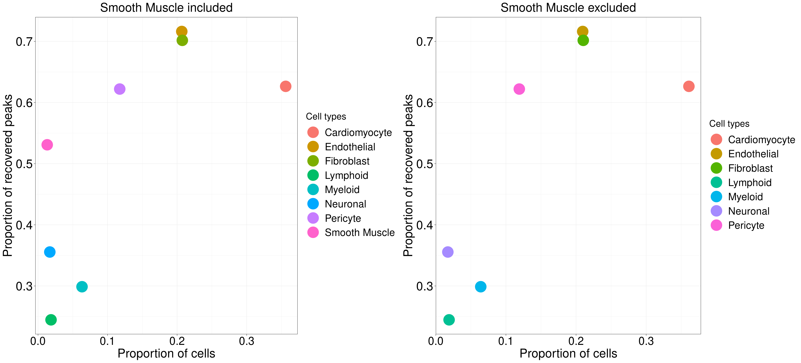

Peak calling for ATAC-seq bulk data
XSun
2022-08-17
Last updated: 2022-09-16
Checks: 6 1
Knit directory: heart_atlas/
This reproducible R Markdown analysis was created with workflowr (version 1.7.0). The Checks tab describes the reproducibility checks that were applied when the results were created. The Past versions tab lists the development history.
The R Markdown file has unstaged changes. To know which version of
the R Markdown file created these results, you’ll want to first commit
it to the Git repo. If you’re still working on the analysis, you can
ignore this warning. When you’re finished, you can run
wflow_publish to commit the R Markdown file and build the
HTML.
Great job! The global environment was empty. Objects defined in the global environment can affect the analysis in your R Markdown file in unknown ways. For reproduciblity it’s best to always run the code in an empty environment.
The command set.seed(20220722) was run prior to running
the code in the R Markdown file. Setting a seed ensures that any results
that rely on randomness, e.g. subsampling or permutations, are
reproducible.
Great job! Recording the operating system, R version, and package versions is critical for reproducibility.
Nice! There were no cached chunks for this analysis, so you can be confident that you successfully produced the results during this run.
Great job! Using relative paths to the files within your workflowr project makes it easier to run your code on other machines.
Great! You are using Git for version control. Tracking code development and connecting the code version to the results is critical for reproducibility.
The results in this page were generated with repository version a63947a. See the Past versions tab to see a history of the changes made to the R Markdown and HTML files.
Note that you need to be careful to ensure that all relevant files for
the analysis have been committed to Git prior to generating the results
(you can use wflow_publish or
wflow_git_commit). workflowr only checks the R Markdown
file, but you know if there are other scripts or data files that it
depends on. Below is the status of the Git repository when the results
were generated:
Ignored files:
Ignored: .Rhistory
Unstaged changes:
Modified: analysis/ATAC_bulk_peak.Rmd
Note that any generated files, e.g. HTML, png, CSS, etc., are not included in this status report because it is ok for generated content to have uncommitted changes.
These are the previous versions of the repository in which changes were
made to the R Markdown (analysis/ATAC_bulk_peak.Rmd) and
HTML (docs/ATAC_bulk_peak.html) files. If you’ve configured
a remote Git repository (see ?wflow_git_remote), click on
the hyperlinks in the table below to view the files as they were in that
past version.
| File | Version | Author | Date | Message |
|---|---|---|---|---|
| Rmd | c24287a | XSun | 2022-09-15 | update |
| html | c24287a | XSun | 2022-09-15 | update |
| Rmd | 3ed1b34 | XSun | 2022-08-26 | update |
| html | 3ed1b34 | XSun | 2022-08-26 | update |
| Rmd | b4734b5 | XSun | 2022-08-25 | update |
| html | b4734b5 | XSun | 2022-08-25 | update |
Introduction
We annotated all cells as the same cluster and did peak calling on the whole data set.
Then, we compare union set and earlier peaks called on cell-type-specific dataset.
Peak calling
Same settings with Alan’s.
projHeart<- addReproduciblePeakSet(ArchRProj = projHeart, maxPeaks = 500000,groupBy = "CLUSTER_SET", pathToMacs2 = macs2, cutOff = 0.01, verbose = T)Number of cells: 26,714
Number of used cells: 16,854
203,876 peaks were found.
Comparing with earlier peaks
Comparing with peaks not cell-type-specific
The peaks for each cell type here are not cell type specific.
The right pannel below shows the proportion of recovered and unrecovered bulk peaks in single cell peaks for each cell type.
The left pannel below shows the number of recovered and unrecovered bulk peaks in single cell peaks for each cell type.
| Version | Author | Date |
|---|---|---|
| b4734b5 | XSun | 2022-08-25 |
The plot below shows the proportion of recovered and unrecovered single cell peaks in bulk peaks for each cell type.

| Version | Author | Date |
|---|---|---|
| b4734b5 | XSun | 2022-08-25 |
The plot below shows the relationship between number of peaks for each cell type and the proportion of recovered peaks in bulk data
| Version | Author | Date |
|---|---|---|
| 3ed1b34 | XSun | 2022-08-26 |
The plot below shows relationship between peaks recovered and cell type abundance

| Version | Author | Date |
|---|---|---|
| b4734b5 | XSun | 2022-08-25 |
We also computed odd ratio according to :
\[ OR = \frac{\frac{P(OCR_{2}|OCR_{1})}{1-P(OCR_{2}|OCR_{1})}}{\frac{P(OCR_{2}|\overline{OCR_{1}})}{1-P(OCR_{2}|\overline{OCR_{1}})}} \] where \(OCR_{1}\) is the our bulk peaks and \(OCR_{2}\) are peaks for each cell type (not cell type specific). We sampled 2,038,760 (203,876 *10) unoverlapping regions (width = 501 which is the same with our peaks) from whole genome (hg38, blacklist, gaps and peaks themselves were excluded) and used these regions as \(\overline{OCR_{1}}\) .
The plots below shows the distribution of the width of the overlaps.

| Version | Author | Date |
|---|---|---|
| b4734b5 | XSun | 2022-08-25 |
We also tried to sample random regions with the same size of \(OCR_{1}\) and used as \(\overline{OCR_{1}}\). The results are similar with earlier ones.
Comparing with cell-type-specific peaks
The peaks for each cell type here are cell type specific.
The right pannel below shows the proportion of recovered and unrecovered peaks for each cell type.
The left pannel below shows the number of recovered and unrecovered peaks for each cell type.
| Version | Author | Date |
|---|---|---|
| 3ed1b34 | XSun | 2022-08-26 |
The plot below shows the proportion of recovered and unrecovered single cell peaks in bulk peaks for each cell type.

The plot below shows the relationship between number of peaks for each cell type and the proportion of recovered peaks in bulk data
The plot below shows relationship between peaks recovered and cell type abundance
Odd ratio:
The plots below shows the distribution of the width of the overlaps.
We also tried to sample random regions with the same size of \(OCR_{1}\) and used as \(\overline{OCR_{1}}\). The results are similar with earlier ones.
sessionInfo()R version 4.2.0 (2022-04-22)
Platform: x86_64-pc-linux-gnu (64-bit)
Running under: CentOS Linux 7 (Core)
Matrix products: default
BLAS/LAPACK: /software/openblas-0.3.13-el7-x86_64/lib/libopenblas_haswellp-r0.3.13.so
locale:
[1] C
attached base packages:
[1] grid stats4 stats graphics grDevices utils datasets
[8] methods base
other attached packages:
[1] genomation_1.28.0 gridExtra_2.3
[3] reshape_0.8.9 ArchR_1.0.1
[5] magrittr_2.0.3 rhdf5_2.40.0
[7] Matrix_1.4-1 data.table_1.14.2
[9] SummarizedExperiment_1.26.1 Biobase_2.56.0
[11] GenomicRanges_1.48.0 GenomeInfoDb_1.32.2
[13] IRanges_2.30.0 S4Vectors_0.34.0
[15] BiocGenerics_0.42.0 MatrixGenerics_1.8.0
[17] matrixStats_0.62.0 ggplot2_3.3.5
loaded via a namespace (and not attached):
[1] bitops_1.0-7 fs_1.5.2 bit64_4.0.5
[4] rprojroot_2.0.3 tools_4.2.0 bslib_0.3.1
[7] DT_0.22 utf8_1.2.2 R6_2.5.1
[10] KernSmooth_2.23-20 DBI_1.1.2 colorspace_2.0-3
[13] seqPattern_1.28.0 rhdf5filters_1.8.0 withr_2.5.0
[16] tidyselect_1.1.2 bit_4.0.4 compiler_4.2.0
[19] git2r_0.30.1 cli_3.3.0 DelayedArray_0.22.0
[22] labeling_0.4.2 rtracklayer_1.56.0 sass_0.4.1
[25] scales_1.2.0 readr_2.1.2 stringr_1.4.0
[28] digest_0.6.29 Rsamtools_2.12.0 rmarkdown_2.14
[31] XVector_0.36.0 pkgconfig_2.0.3 htmltools_0.5.2
[34] plotrix_3.8-2 highr_0.9 fastmap_1.1.0
[37] BSgenome_1.64.0 htmlwidgets_1.5.4 rlang_1.0.5
[40] rstudioapi_0.13 impute_1.70.0 farver_2.1.0
[43] jquerylib_0.1.4 BiocIO_1.6.0 generics_0.1.2
[46] jsonlite_1.8.0 vroom_1.5.7 crosstalk_1.2.0
[49] BiocParallel_1.30.3 dplyr_1.0.9 RCurl_1.98-1.7
[52] GenomeInfoDbData_1.2.8 Rcpp_1.0.8.3 munsell_0.5.0
[55] Rhdf5lib_1.18.2 fansi_1.0.3 lifecycle_1.0.1
[58] stringi_1.7.6 whisker_0.4 yaml_2.3.5
[61] zlibbioc_1.42.0 plyr_1.8.7 parallel_4.2.0
[64] promises_1.2.0.1 crayon_1.5.1 lattice_0.20-45
[67] Biostrings_2.64.0 hms_1.1.1 knitr_1.39
[70] pillar_1.7.0 rjson_0.2.21 reshape2_1.4.4
[73] codetools_0.2-18 XML_3.99-0.9 glue_1.6.2
[76] evaluate_0.15 tzdb_0.3.0 vctrs_0.4.1
[79] httpuv_1.6.5 gtable_0.3.0 purrr_0.3.4
[82] assertthat_0.2.1 xfun_0.30 gridBase_0.4-7
[85] restfulr_0.0.14 later_1.3.0 tibble_3.1.7
[88] GenomicAlignments_1.32.0 workflowr_1.7.0 ellipsis_0.3.2